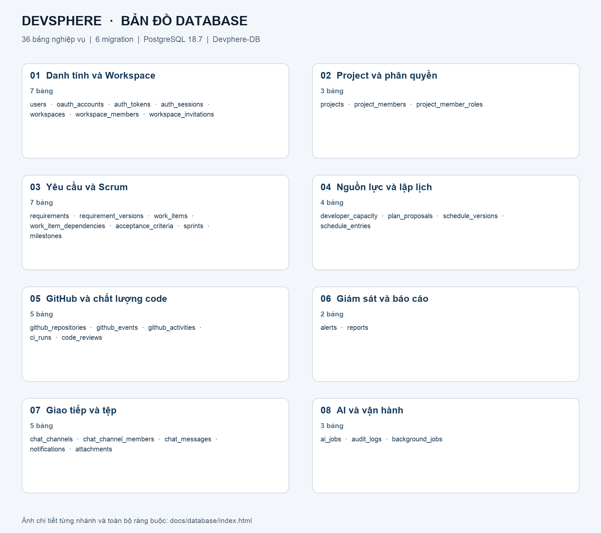
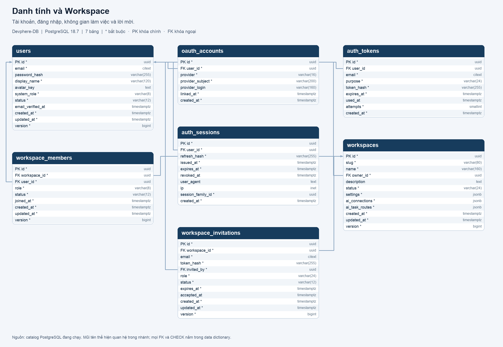
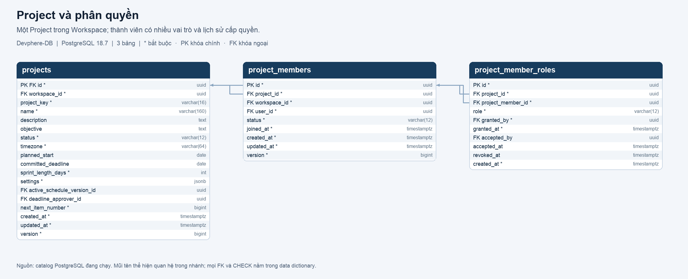
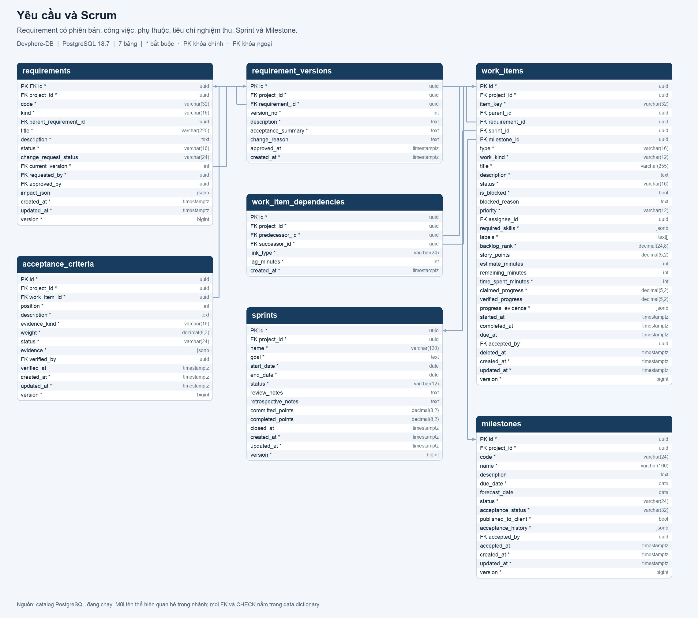
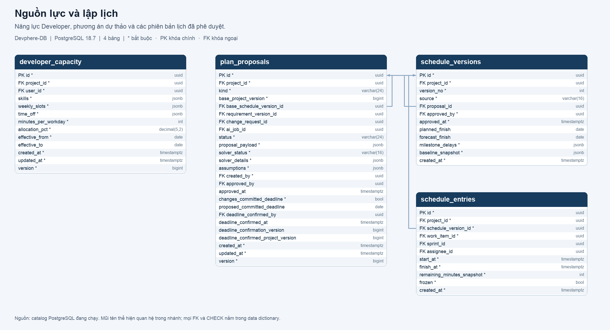
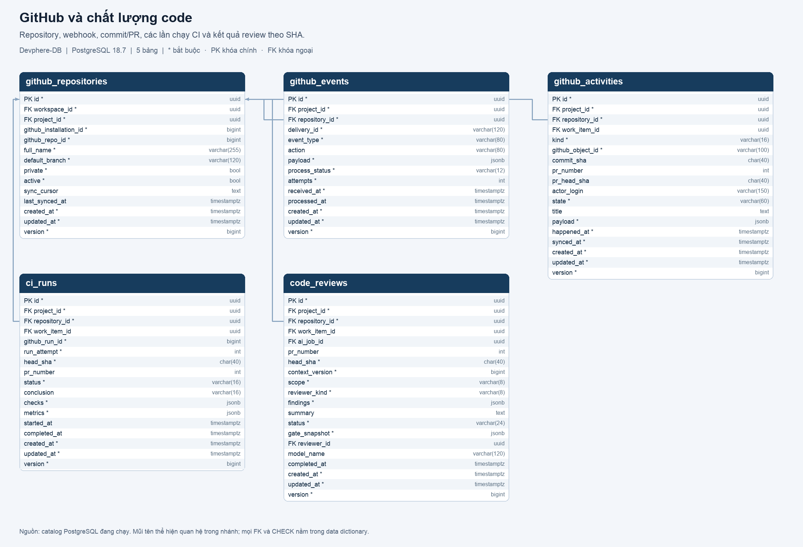
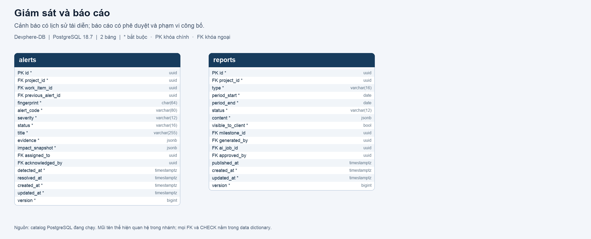
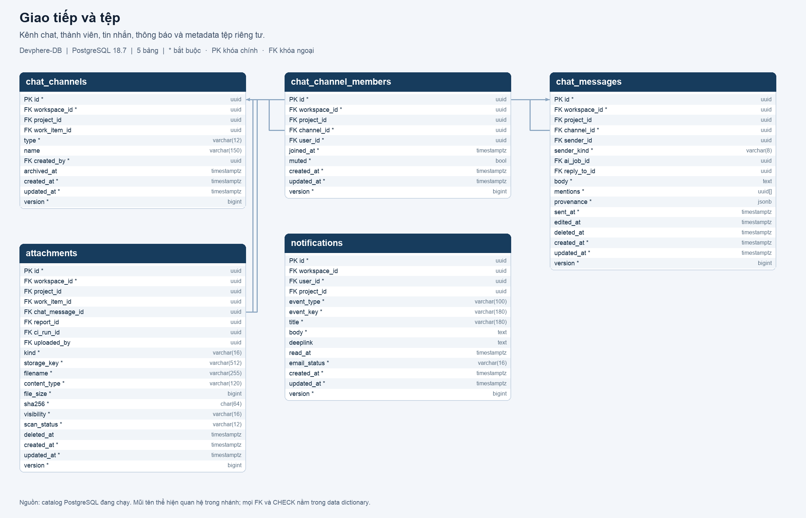
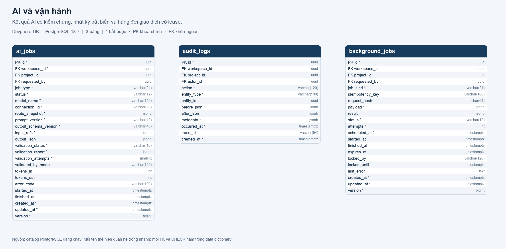

36 bảng nghiệp vụ, 6 migration. Các ảnh ERD được trích từ catalog của container Devphere-DB đang chạy. Nhấn ảnh để xem đầy đủ.
Data dictionary · Schema catalog

Tài khoản, đăng nhập, không gian làm việc và lời mời.

Một Project trong Workspace; thành viên có nhiều vai trò và lịch sử cấp quyền.

Requirement có phiên bản; công việc, phụ thuộc, tiêu chí nghiệm thu, Sprint và Milestone.

Năng lực Developer, phương án dự thảo và các phiên bản lịch đã phê duyệt.

Repository, webhook, commit/PR, các lần chạy CI và kết quả review theo SHA.

Cảnh báo có lịch sử tái diễn; báo cáo có phê duyệt và phạm vi công bố.

Kênh chat, thành viên, tin nhắn, thông báo và metadata tệp riêng tư.

Kết quả AI có kiểm chứng, nhật ký bất biến và hàng đợi giao dịch có lease.
